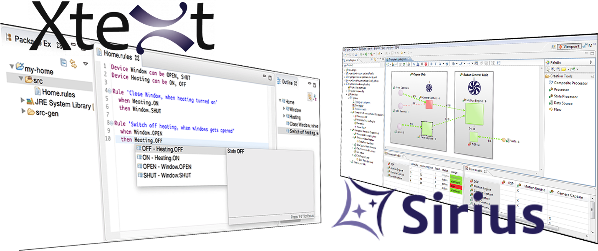

Project topics for MDE students
Contact person: Istvan David.
Remark: should you have any questions regarding the topics, or have any new project ideas, do not hesitate to contact me.
Topic group #1: Design of DSLs with Xtext and Sirius
Domain-specific languages (DSL) are integral parts of nowadays' engineering practice. As opposed to elaborate and generic-purpose modeling languages (such as the UML), DSLs are tailored to a specific problem of a specific domain. Due to this narrow scope, newly arising problems require development of new DSLs and that, in a rapid and efficient way.
By choosing one of these topics, you will have the opportunity to get acquainted with the fundamentals of DSL design, and more specifically: design of textual DSLs with Xtext and design of visual DSLs with Sirius.

[1] A language for modeling constraints of characteristics in complex heterogeneous systems (Xtext)
This project aims to provide system engineers with a textual language for expressing constraints over the system's parameters in form of arithmetic and logical expressions. Your tasks are:
- Defining such a language based on a previously developed visual equivalent of it [1] and implementing a supporting IDE with Xtext.
- Facilitating the symbolic evaluation of expressions via the SymPy framework [2].
- Demonstrating your results through a simple example.
Background
[1] Modeling and Enactment Support for Early Detection of Inconsistencies in Engineering Processes, I. Dávid, B. Meyers, K. Vanherpen, Y. Van Tendeloo, K. Berx, H. Vangheluwe, 2nd International Workshop on Collaborative Modelling in MDE, 2017. [
PDF]
[2]
SymPy documentation
[2] A language for modeling performance metrics and KPI of engineering processes (Xtext)
Evaluating the performance of engineering or business processes requires well-defined metrics, known as key performance indicators (KPIs), combining lower level metrics into a higher level one, for example: the cost of the process, the utilization of resources, etc. In this project, you'll develop a language for modeling such KPIs and an will provide a framework for evaluating these in processes based on the FTG+PM framework [1].
Your tasks are:
- Researching some of the techniques of process cost modeling [2], defining an appropriate language for modeling costs and implementing a supporting IDE with Xtext.
- Providing a framework for evaluating KPIs.
- Demonstrating your results through a simple example.
Background
[1] Engineering Process Transformation to Manage (In)consistency, I. Dávid, J. Denil, K. Gadeyne, H. Vangheluwe, 1st International Workshop on Collaborative Modelling in MDE, 2016 [
PDF]
[2] Process Cost Modeling: Strategic Engineering and Economic Evaluation of Materials Technologies, F. Field, R. Kirchain, R. Roth, JOM (2007) 59: 21. https://doi.org/10.1007/s11837-007-0126-0
[3] Tool support for process weaving (Sirius or Xtext)
Explicit modeling of processes can shed light on the dynamics of engineering and business related workflows, product development or stakeholder interaction. Very often, however, the underlying process is implied by the combination of multiple processes, possibly on different levels of abstraction. In this project you'll develop a modeling language for process weaving. Your work starts from our in-house process modeling tool. [1] Your tasks include:
- A language for defining process weaving patterns, along with a framework for deriving the resulting process.
- At least one analysis technique for the resulting process based on the compositionality rules of the interwoven processes.
- Demonstrating your results through a simple example.
Background
[1] Modeling and Enactment Support for Early Detection of Inconsistencies in Engineering Processes, I. Dávid, B. Meyers, K. Vanherpen, Y. Van Tendeloo, K. Berx, H. Vangheluwe, 2nd International Workshop on Collaborative Modelling in MDE, 2017. [
PDF]
[2] Towards an Aspect Weaving BPEL engine, C. Courbis, A. Finkelstein, Proceedings. 27th International Conference on. IEEE, 2005. [
PDF]
[4] A visual process simulation tool (Sirius)
Modeling processes is a key in many engineering and business domains. Appropriate visualizations of the process should be provided not just during the specification phase, but also during the enactment of the process. The FTG+PM framework enables explicit modeling of processes, with the execution semantics provided by model transformations. In this project you'll develop a visualization of FTG+PM conform processes under execution, using the Sirius framework. You'll start from an existing tool developed in [1]. Your tasks include:
- Visualization of the process under execution.
- Providing controls for process execution.
- Demonstrating your results through a simple example.
Background
[1] Modeling and Enactment Support for Early Detection of Inconsistencies in Engineering Processes, I. Dávid, B. Meyers, K. Vanherpen, Y. Van Tendeloo, K. Berx, H. Vangheluwe, 2nd International Workshop on Collaborative Modelling in MDE, 2017. [
PDF]
[5] A visual modeling language for streaming model transformations (Sirius)
Streaming model transformations represent a novel class of transformations to manipulate models whose elements are continuously produced or modified in high volume and with rapid rate of change. Executing streaming transformations requires efficient techniques to recognize activated transformation rules over a live model and a potentially infinite stream of events. In this project, you'll develop a visual modeling language for specifying transformation rules over streams. Your tasks are:
- Understanding the concept and underlying techniques of streaming model transformations [1], defining an appropriate visual modeling language [2] [3] for specifying transformation rules and implementing a supporting IDE with Sirius.
- Translating your streaming transformation patterns to a suitable model transformation framework.
- Demonstrating your results through a simple example.
Background
[1] Foundations for Streaming Model Transformations by Complex Event Processing, I. Dávid, I. Ráth, D. Varró, International Journal on Software and Systems Modeling, pp 1--28, 2016. DOI: 10.1007/s10270-016-0533-1. [
Open access pdf].
[2] The "Physics" of Notations: Toward a Scientific Basis for Constructing Visual Notations in Software Engineering, D. L. Moody, IEEE Transactions on Software Engineering, vol. 35, no. 6, pp. 756-779, November/December, 2009.
[3] Maintaining knowledge about temporal intervals, J.F. Allen, Communications of the ACM 26(11) pp.832-843, Nov. 1983. [
webpage]
Topic group #2: Theory of process modeling
These topics dig deeper into the theoretical side of process modeling.
[6] Optimized process generation from architectural, functional and extra-functional system characteristics
Explicitly modeled processes are a significant step towards higher productivity. Modeling the process itself, however, is still a labor-intensive and error-prone task. The FTG+PM formalism and its recent extensions [1] enable the modeling the characteristics of the system being developed during the process. These characteristics are currently used in conjunction with the process in order to detect inconsistencies in the design. Investigating system characteristics and their relationships, in turn, enables generating processes which are the most optimal in terms of consistency, transit time, and other extra-functional properties. In this project you'll implement algorithms for process generation, based on architectural, functional and extra-functional characteristics of the system. Your work will be situated within our process modeling framework, built on top of cutting-edge Eclipse technologies. (You will be NOT asked to integrate your work with the framework beyond the necessary minimum.) Your tasks are:
- Understanding the FTG+PM framework and its extensions [1].
- Providing algorithms for generating process candidates suitable for implementing the system based on its characteristics, starting from design-structure matrices (DSM).
- Providing a method for selecting the optimal process w.r.t. one or two KPIs.
- Demonstrating your results through a simple example.
Background
[1] Modeling and Enactment Support for Early Detection of Inconsistencies in Engineering Processes, I. Dávid, B. Meyers, K. Vanherpen, Y. Van Tendeloo, K. Berx, H. Vangheluwe, 2nd International Workshop on Collaborative Modelling in MDE, 2017. [
PDF]
[2] Extended dependency modeling for effective and efficient design decision support, K. Berx, H. Karhula, M. Nicolai, D. Maes. (Available on demand.)
[7] Process scheduling and optimization by constraint solving
Background
[1] Resource-constrained project scheduling: models, algorithms, extensions and applications, C. Artigues, S. Demassey, E. Neron. John Wiley & Sons, 2013.[
PDF]
[2] Engineering Process Transformation to Manage (In)consistency, I. Dávid, J. Denil, K. Gadeyne, H. Vangheluwe, 1st International Workshop on Collaborative Modelling in MDE, 2016
[3] A MiniZinc Tutorial, K. Marriott, P. J. Stuckey [
PDF]
[8] Inconsistency resolution by constraint solving
Background
[1] Engineering Process Transformation to Manage (In)consistency, I. Dávid, J. Denil, K. Gadeyne, H. Vangheluwe, 1st International Workshop on Collaborative Modelling in MDE, 2016
[2] A MiniZinc Tutorial, K. Marriott, P. J. Stuckey [
PDF]
Topic group #3: Application of ontologies
System modeling is a prevailing paradigm in nowadays' engineering. Even though tool providers offer mature and seasoned modeling tools, the actual modeling process is still a challenge, because it requires a good understanding of the problem and its context, something often referred as domain knowledge. Ontologies are a formal system for modeling domain knowledge. Much like in standard modeling languages (such as UML class diagrams), knowledge is captured by using types types, properties, and interrelationships of the entities. Ontologies are typically used to infer new knowledge from known domain facts; and for identifying contradictions, i.e. flaws in the knowledge base. As an emerging technique in systems engineering, ontologies are expected to become integral part of the next generation of engineering/modeling tools.
By choosing one of these topics, you will have the opportunity to get acquainted with the fundamentals of ontology-based modeling.

[9] Enhancing engineering process models with domain-specific knowledge
Background
- Ontology Development 101: A Guide to Creating Your First Ontology, N.F. Noy, D. L. McGuinness, Stanford knowledge systems laboratory technical report KSL-01-05 and Stanford medical informatics technical report SMI-2001-0880
- Modeling and Enactment Support for Early Detection of Inconsistencies in Engineering Processes, I. Dávid, B. Meyers, K. Vanherpen, Y. Van Tendeloo, K. Berx, H. Vangheluwe, 2nd International Workshop on Collaborative Modelling in MDE, 2017.
[10] Constraint identification by machine learning (Bayesian reasoning)
Background
- Bayesian Reasoning Over Models, S. J. Herzig, C. J. Paredis. In 11th Workshop on Model-Driven Engineering, Verification and Validation MoDeVVa 2014, pages 69--78, 2014.
- Modeling and Enactment Support for Early Detection of Inconsistencies in Engineering Processes, I. Dávid, B. Meyers, K. Vanherpen, Y. Van Tendeloo, K. Berx, H. Vangheluwe, 2nd International Workshop on Collaborative Modelling in MDE, 2017.